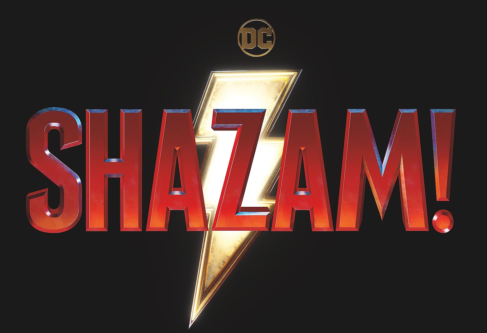

Капітан Марвел (англ. Captain Marvel), також відомий як Шазам (англ. Shazam) — вигаданий супергерой, персонаж коміксів, що публікувалися спочатку видавництвом Fawcett Comics, а потім DC Comics. Створений в 1939 році художником Чарльзом Кларенсом Беком і письменником Біллом Паркером, персонаж вперше з'явився в журналі Whiz Comics # 2 (лютий 1940 року). Капітан Марвел — альтер-его Біллі Бетсона, мрійливого підлітка, який працює репортером новин на радіо і був обраний добрим чарівником Шазамом для того, щоб стати супергероєм. Всякий раз, коли Біллі вимовляє ім'я чарівника, він виявляється вражений магічною блискавкою, яка перетворює його в дорослого супергероя, наділеного здібностями шести міфологічних фігур
Кілька його друзів і членів сім'ї, більш відомі як «Сім'я Марвел», включаючи Мері Марвел і Капітана Марвела-молодшого, можуть отримувати частину сили Біллі і самі ставати «Марвел». Проголошений «найсильнішим у світі смертних» в свої пригоди, Капітан Марвел отримав прізвисько «Big Red Cheese» («Великий червоний сир») від суперлиходія Доктора Сива; цей епітет був пізніше прийнятий шанувальниками Капітана Марвела. З продажу коміксів Капітан Марвел був найпопулярнішим супергероєм 1940-х років, так як серія коміксів про нього під назвою Captain Marvel Adventures (укр. Пригоди Капітана Марвела) продавалася в більшій кількості примірників, ніж комікси про Супермена та інших супергероїв в середині 1940-х років зарозумілий і проблемний п'ятнадцятирічний підліток, що живе в Філадельфії, який до моменту початку історії пройшов через кілька прийомних сімей і не підозрює про свою долю, яка чекає його, у той час, як його приймає нова сім'я. Після його переїзду його нові батьки і брати і сестри — серед них переглянуті версії Мері Бетсон і Фредді Фрімана — намагаються інтегрувати його в свої життя. Доктор Шива, схиблений на легенді про давнє магічному воїна Чорному Адамі, знаходить його могилу і відкриває її, звільнивши мстивого і жорстокого воїна. Ця подія привертає до себе увагу Чарівника (у цій версії не має імені і зображеного, як австралійський абориген замість європейця), останнього з ради істот, які контролювали магію з фортеці, відомої, як Скала Вічності, поки їх усіх не вбив Чорний Адам. Justice League Том 2 № 0 (вересень 2012 року). Чарівник починає викрадати людей одного за іншим за допомогою магії, щоб перевіряти їх на можливість успадковувати його магічні сили, але відкидаючи кожного, оскільки у них недостатньо чисте серце